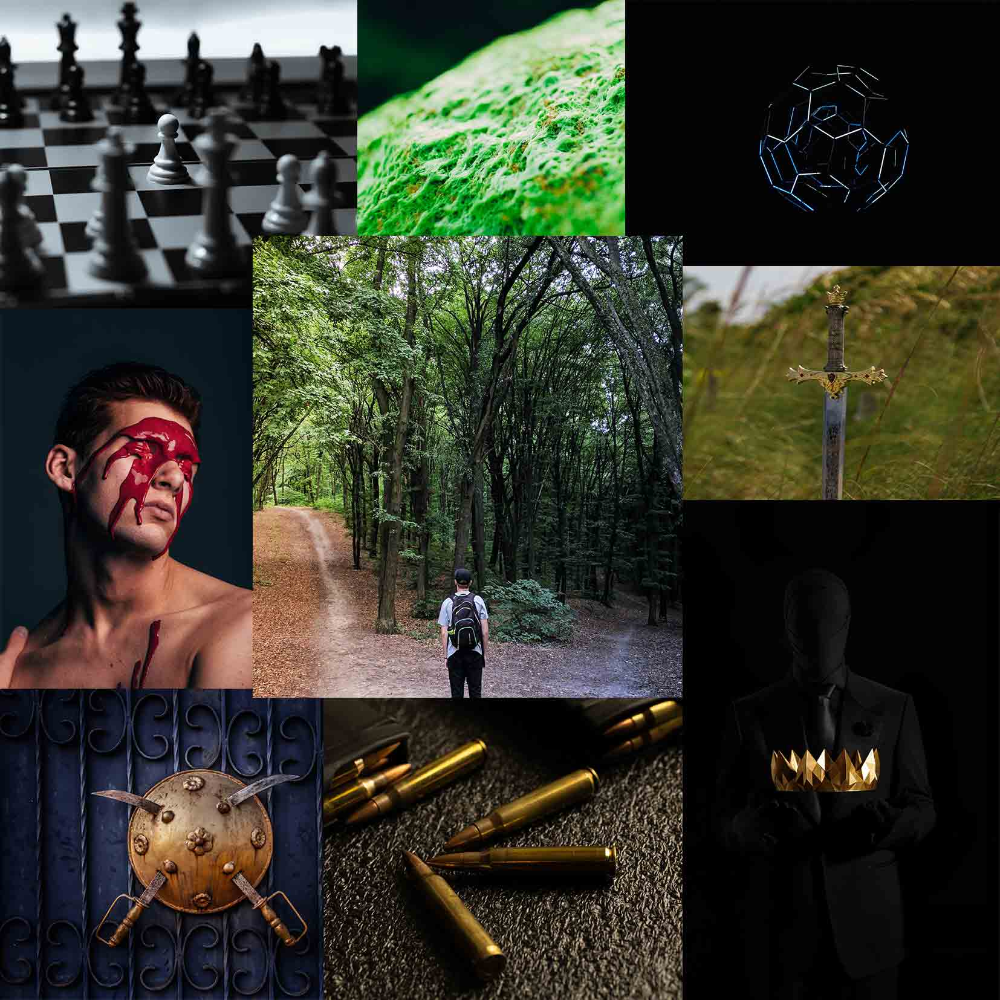

Nachin och Mareldsön
Under tiden rädsla råder över världen fortsätter Leijas liv som vanligt med skola och vardags liv.
Men när hon ofrivilligt hamnar på en öde ö tillsammans med andra ungdommar blir överlevnad
första prioritet.
Följ även Oena Kage, dotter två av världens mäktigaste nachiner och hur hon måste får ett uppdrag
som i hennes standard är enkelt.
Leija White

Leija är en tjej som trots motgångar fortfarande kämpar med att hitta sin plats. Hon börjar på gymnasiet i en tid där en märklig svart blomma försätter slumpmässiga personer i komma som oftast slutar i död. Tiden på gymnasiet går bättre än förväntat och hon blir vän med Isabella Hansen, men något händer och Leija finner sig själv i empiktcentrum. Och innan hon vet ordet av är hon fast på Mareldsön med främlingar och fiender.
Hobbys
- Aikido
Pontus Alpin
Oena Kage